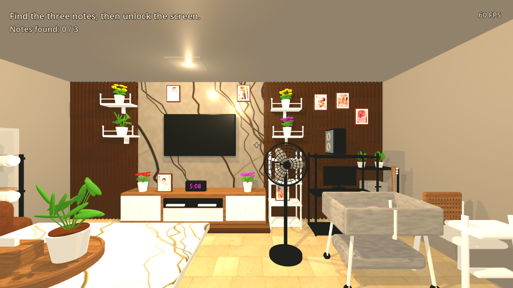
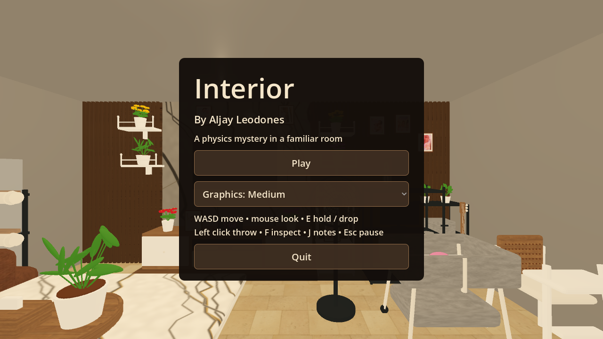
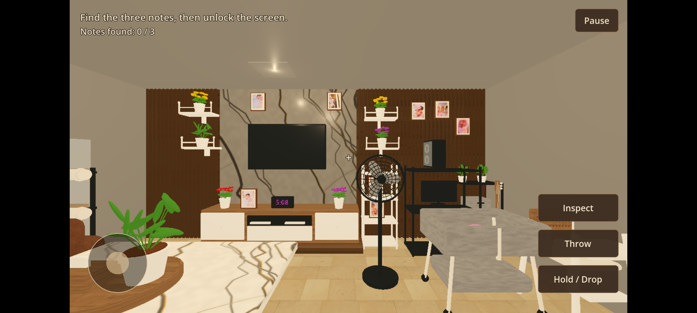
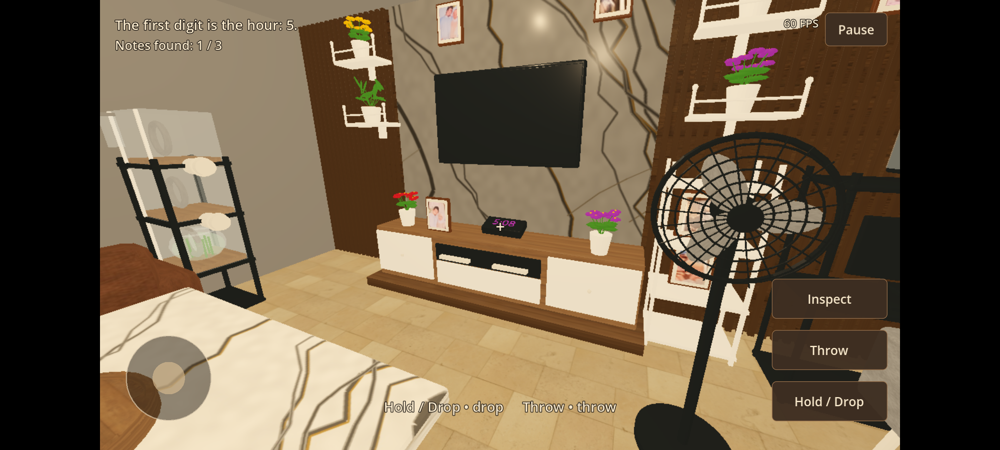
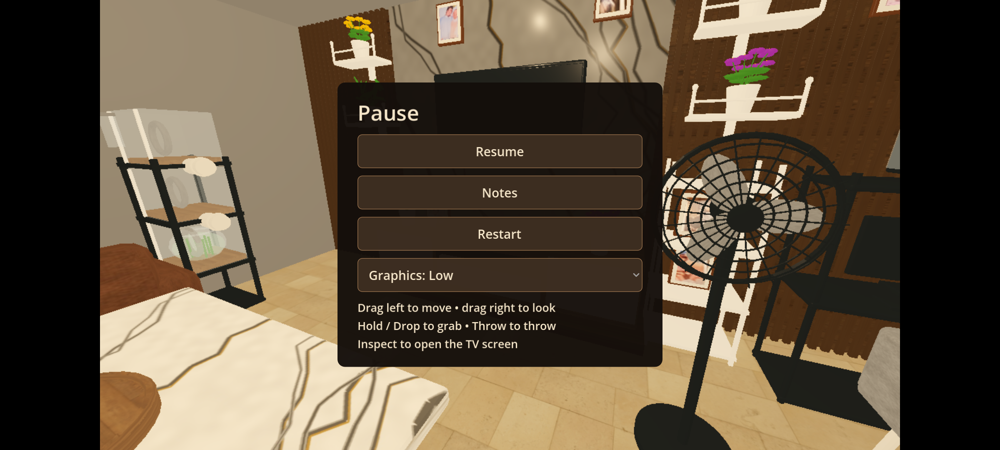

Interior — Playable game review
By Aljay Leodones
Room layout and Blender model approved. The EXE and APK are built and tested. Owner review of the playable game is pending before the GitHub push and downloadable release.
Windows game

Actual exported EXE at the initial first-person camera, 1280 × 720. High enables dynamic shadows and 4× antialiasing. WASD moves, the mouse looks, E holds or drops, left click throws, F inspects the TV, J opens notes, and Esc pauses.

Android game
The ARM APK loads and accepts touches in an Android 16 emulator using hardware graphics. This confirms install and interaction compatibility; its displayed FPS is not evidence of low-tier phone performance. Android starts on Low; Medium and High increase resolution and antialiasing.

Left touch movement and right touch look; Hold / Drop, Throw, Inspect, and Pause buttons.
A real touch grab discovers a clue. The same button drops the held object.

Throw releases the clock with an impulse. The room and furniture retain collisions.

Pause, Resume, Notes, Restart, and three graphics settings.
Measured desktop performance
Exported EXE on NVIDIA RTX 4060, 1280 × 720, 120 FPS cap, VSync disabled, 2-second warmup and 20 seconds of real frame timings. Scenario: camera sweep with sixteen furniture bodies repeatedly activated.
| Graphics | Median FPS | Slowest 1% equivalent FPS |
|---|
| Low | 119.5 | 112.5 |
| Medium | 117.2 | 112.7 |
| High | 123.4 | 98.6 |
The room contains 48 physics assemblies and 73,784 triangles. Compound collisions, sleeping bodies, static vertex lighting, 1K/512 textures, and mobile quality options keep its workload small. All 104 integration assertions and the four-second settling check pass. No universal 60–120 FPS guarantee is made.
Room and physics details
Estimated room dimensions: 6.6 × 5.4 × 2.9 m. Unseen walls, backs, and ceiling are inferred. Fine shapes and materials differ from the photograph. Furnishings preserve their initial arrangement until grabbed, pushed, or touched by an active body; then they simulate normally. Wall decorations detach when grabbed. Structural walls, floor, ceiling, and tiny components within an assembly stay together.
Find three object notes and use the clock's time at the TV to solve the mystery; then continue rearranging the room. Technical support fixes add the photographed side rack and separate loose components. The runtime fixture positions match the Blender lighting bake. The Android APK is locally debug-signed for installation.
Build hashes and runtime audit · Performance measurements · Integration checks · Android interaction check · Blender source · Approved model review
The EXE is in builds/windows/Interior.exe; the APK is in builds/android/Interior.apk in the workspace. Open them from the links in the chat. Approve the playable game and builds to proceed with the repository push and downloadable GitHub release.